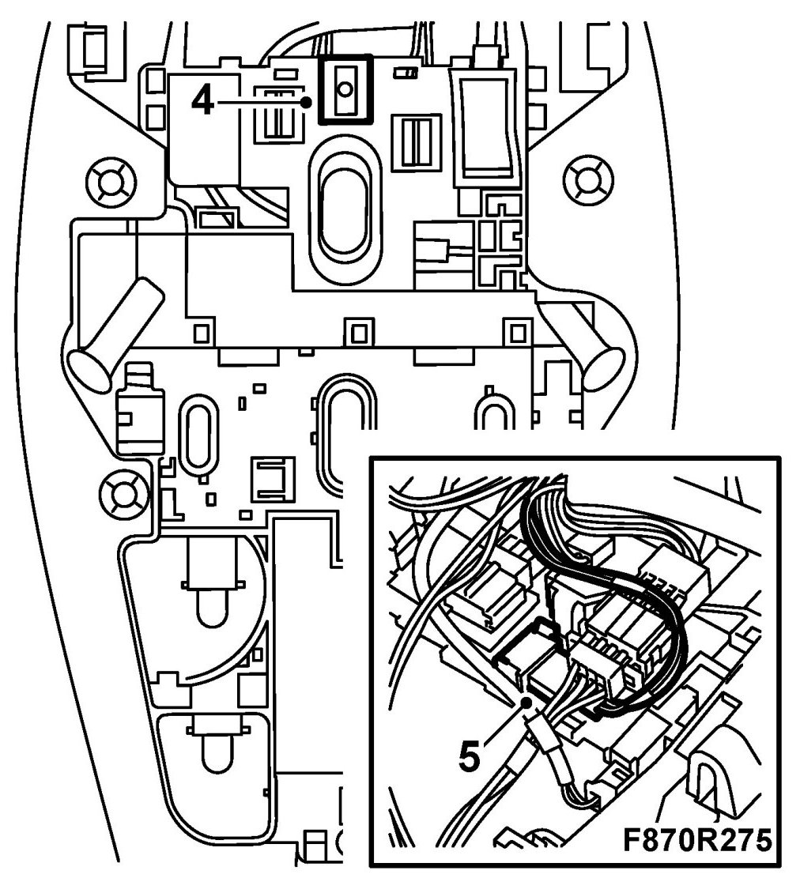
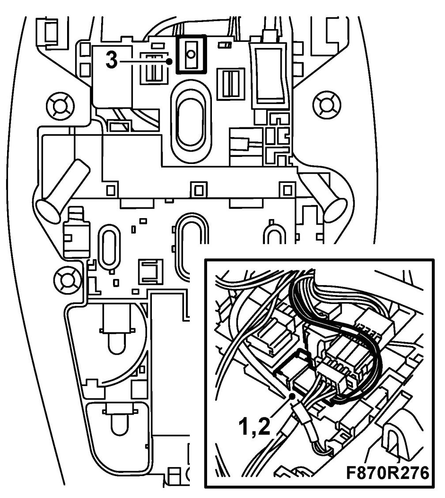
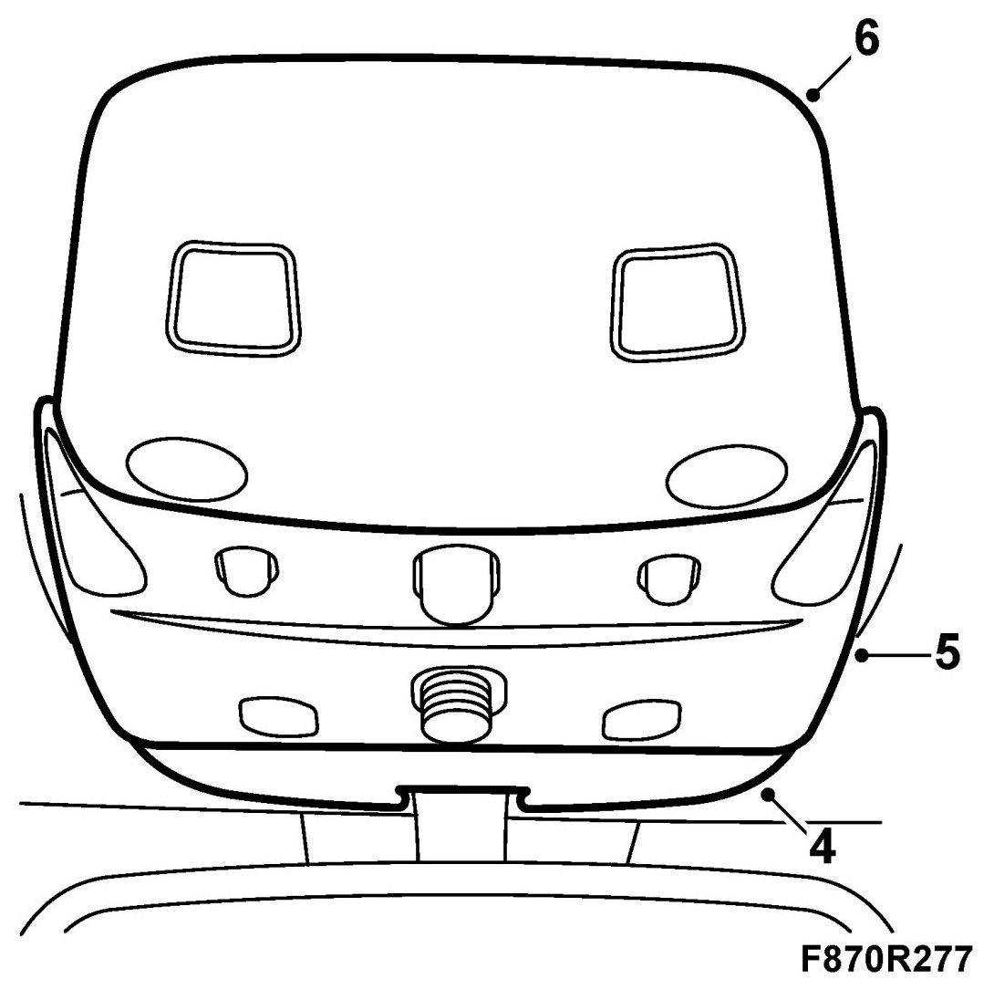

Cabin Temperature Sensor / Switch: Service and Repair
Cabin Temperature Sensor
To remove
1. Dismantle the rear cover from the headlining's lamp console.
2. Dismantle the centre cover from the headlining's lamp console.
3. Dismantle the front cover from the headlining's lamp console.
4. Dismantle the compartment temperature sensor by pressing out the hooks that hold the compartment temperature sensor at the same time as the sensor is lifted upwards.

5. Pull out the compartment temperature sensor from the lamp console and dismantle the connector from the compartment temperature sensor.
To fit
1. Connect the compartment temperature sensor's connector to the sensor.

2. Insert the compartment temperature sensor into position.
3. Fit the compartment temperature sensor by carefully pressing it into the lamp console so that the hooks lock into position.
4. Fit the front cover on the headlining's lamp console.

5. Fit the centre cover on the headlining's lamp console.
6. Fit the rear cover on the headlining's lamp console.